The Frayed Backpack is a solid starter bag that provides 9 additional slots
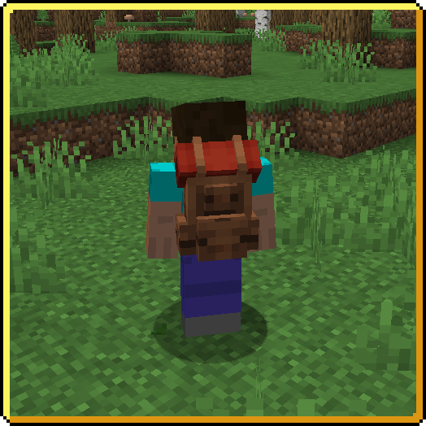
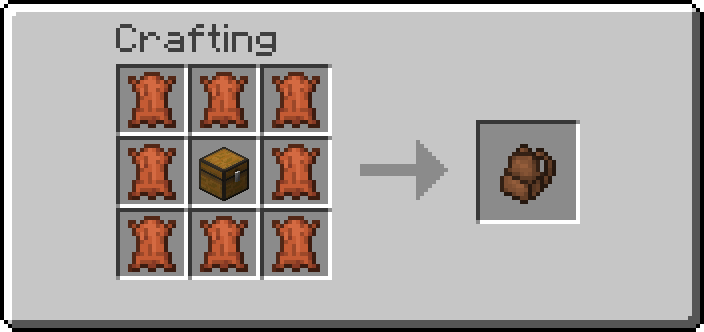
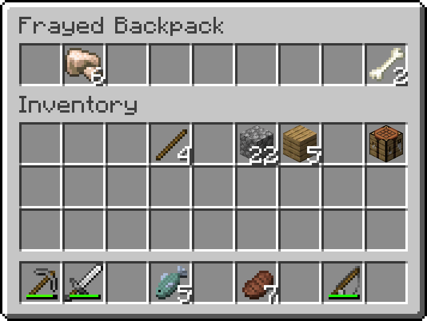
An upgrade for the Frayed Backpack. Expanding inventory space by another 9 slots.
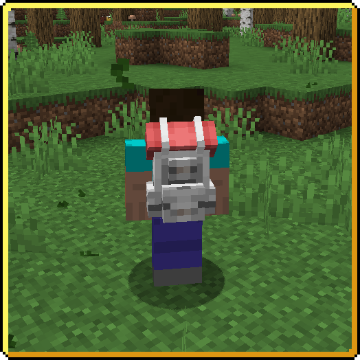
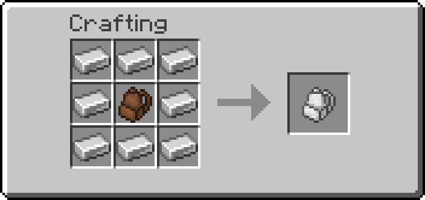
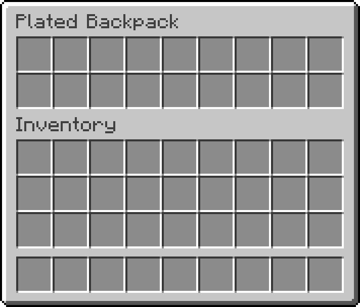
An upgrade for the Plated Backpack. Expanding inventory space by another 9 slots. Total 27.
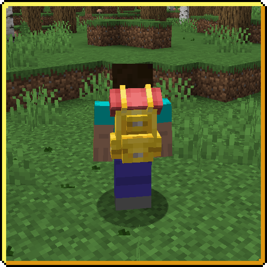
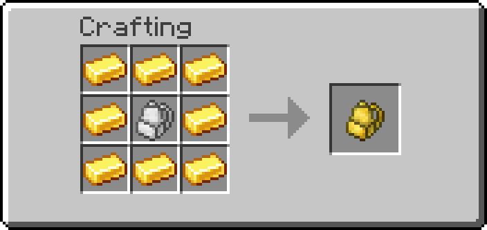
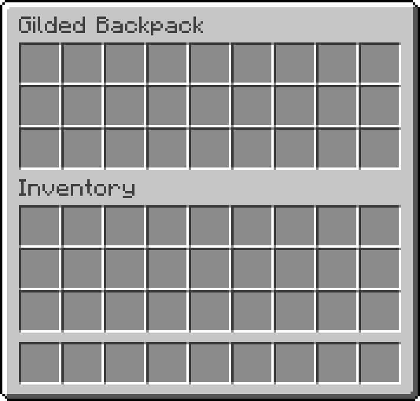
An upgrade for the Gilded Backpack. Expanding inventory space by another 18 slots. Total 45.
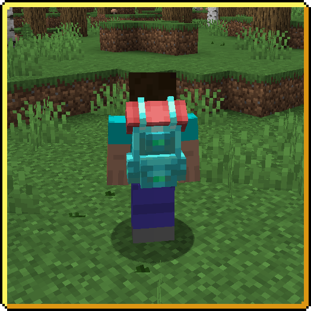
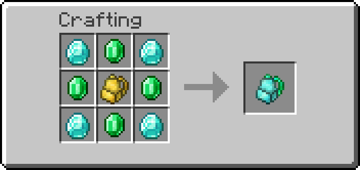
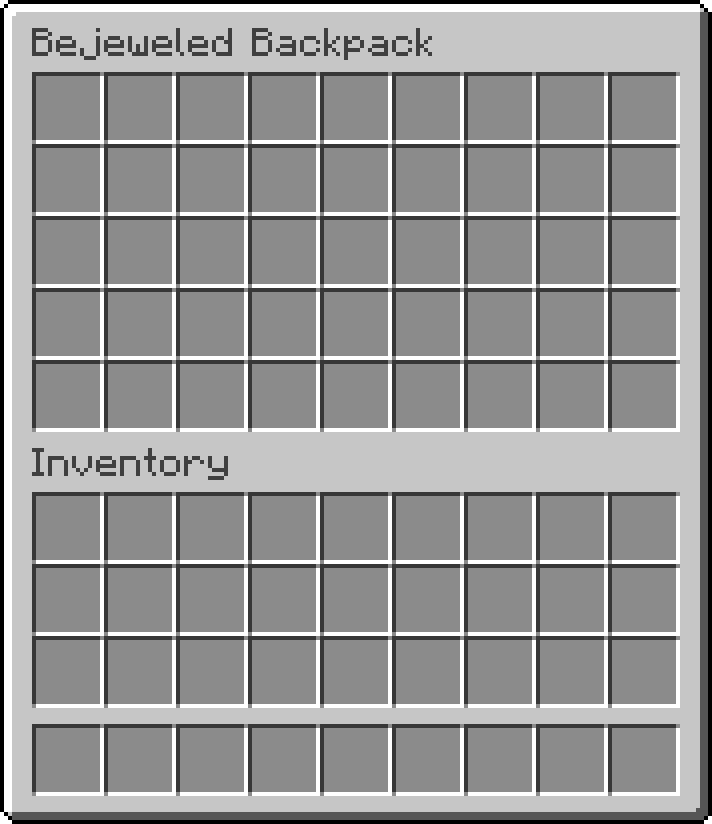
An upgrade for the Bejeweled Backpack. Expanding inventory space by another 9 slots. Total 54.
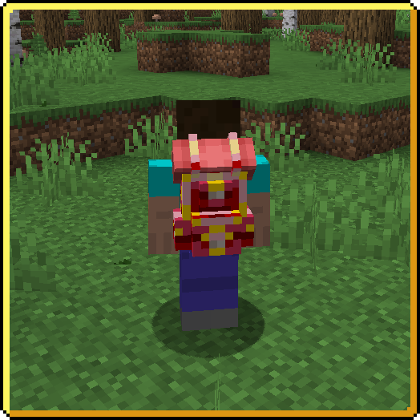
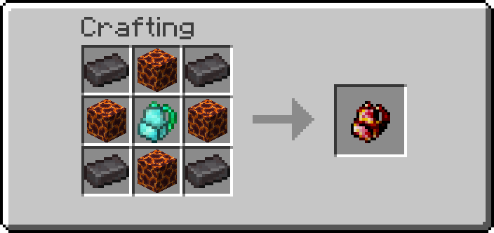
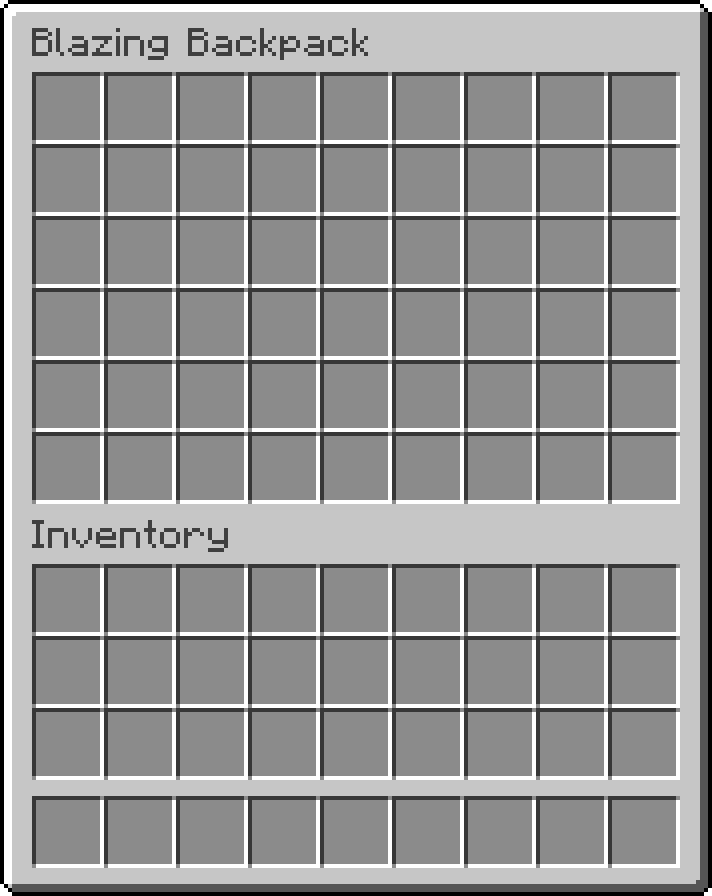
An upgrade for the Blazing Backpack. Expanding inventory space by another 12 slots. Total 66.
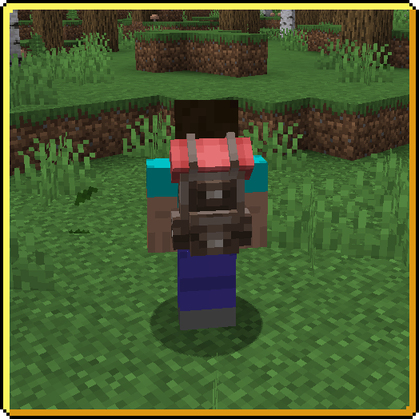
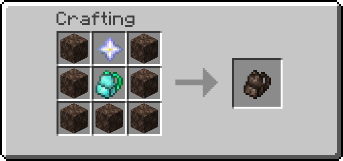
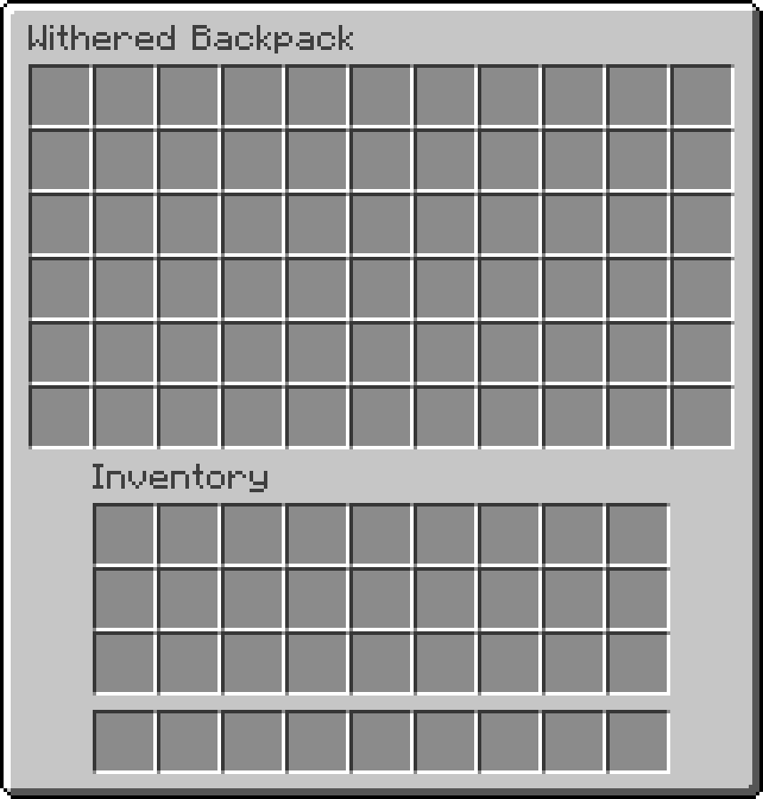
An upgrade for the Withered Backpack. Expanding inventory space by another slots 24. Total 90.
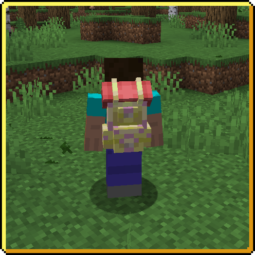
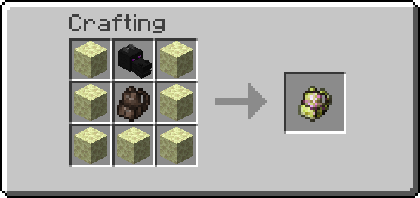
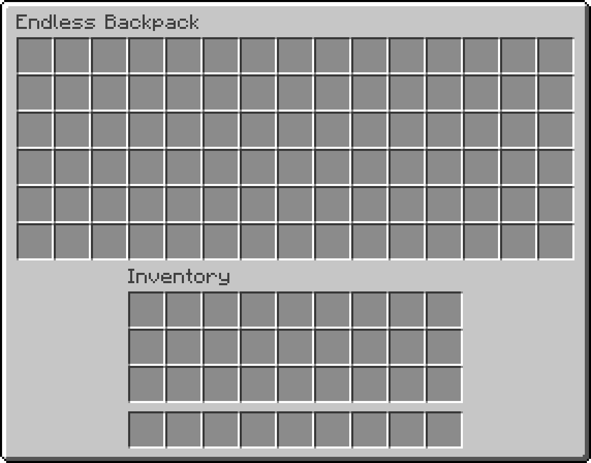